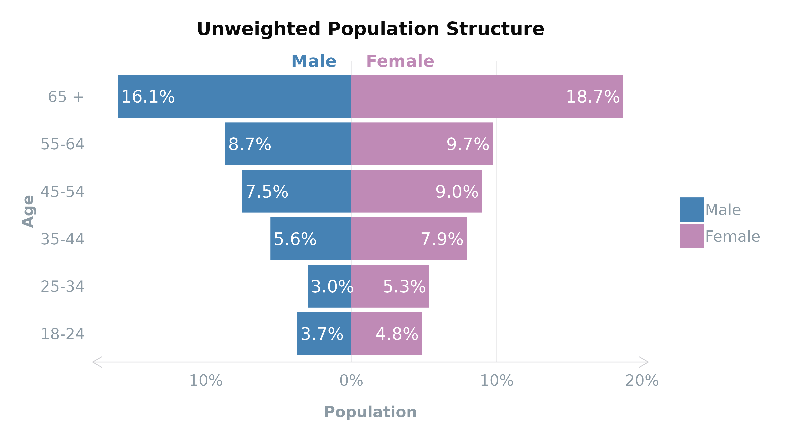

In the realm of survey analysis, accurately reflecting the
broader population within your sample data is paramount. This accuracy
is often compromised by various factors, such as unequal probabilities
of selection or response biases, leading to over- or
under-representation of certain groups. The solution? Survey
weighting.
This article explores the essence of survey weighting, its types, and
dives into the practical application of these techniques in R, ensuring
your survey results truly mirror the population you’re studying.
Understanding Survey Weighting
Survey weighting is a statistical technique applied to survey data to
adjust for discrepancies between the sample and the target population.
This adjustment is critical in instances where certain segments of the
population are overrepresented or underrepresented, potentially skewing
the survey results.
Types of Survey Weights
- Design Weights: These adjust for the unequal probabilities of selection that arise in the survey’s sampling design.
- Post-Stratification Weights: These weights adjust the sample to align with known population characteristics, such as age, gender, or income levels.
- Calibration Weights: A more generalised form of post-stratification, calibration weights use auxiliary information to ensure that survey estimates reflect certain population totals across multiple categories.
Deciding which type of weighting is most appropriate for your
survey data depends on the design of your survey, the available
auxiliary information, and the specific goals of your analysis.
The Basics of Weighting
To illustrate the fundamental concept of weighting, consider a
scenario where the comparison between the sample and the actual (target)
population reveals an over-representation of females (55%) in the sample
compared to the actual population (51%) and an under-representation of
males.
Visualising Sample vs. Actual Populations
Using ggplot2, we visualise this discrepancy by plotting
the gender distribution within two circles representing the sample and
target populations, respectively. While this visualisation depicts the
imbalance, our goal is to mathematically adjust this skew. 
Calculating and Applying Weights
The adjustment process involves calculating weights based on the target and sample proportions:
where:
- is the weight to be applied,
- is the target population proportion, and
- is the sample population proportion.
For our gender example:
Applying these weights:
The weighted sample proportions now align with the target
population, correcting the initial imbalance.
Implementing Weighting in R
Two common weighting techniques are cell-based weighting and rake
weighting. Cell-based weighting applies a detailed post-stratification
by adjusting weights at intersections of multiple characteristics. Rake
weighting, under calibration weights, iteratively aligns sample weights
across various variables to match population margins.
Cell-based weighting fine-tunes survey weights to align the sample
distribution with known population margins across multiple dimensions or
characteristics. This method enables granular adjustments by considering
intersections of categories (e.g., specific age groups within each
gender).
Implementing Cell-Based Weighting in R:
1. Clean and View Variables
First, we
re-factor the ageGroup variable so that the subgroups of
ageGroups in the survey data aligns with the age groups in
the census data.
# Using the practice dataset for survey weights, save as survey_df
survey_df <- get_data("survey_wt") %>%
labelled::unlabelled() %>%
process_factors()
# Refactor the ageGroup variable
survey_df <- mutate(survey_df,
ageGroup = case_when(
age <= 24 ~ "18-24",
age > 24 & age <= 34 ~ "25-34",
age > 34 & age <= 44 ~ "35-44",
age > 44 & age <= 54 ~ "45-54",
age > 54 & age <= 64 ~ "55-64",
age > 64 ~ "65 +"
)
)We can then view the population structure of the gender
and ageGourp variables within the dataset for a comparison
with the target population.
# View the population structure by age groups
plot_popn(survey_df,
xVar = "gender",
yVar = "ageGroup",
addLabels = TRUE,
title = "Unweighted Population Structure"
)
| Age Group | Male | Female |
|---|---|---|
| 65 + | 10.6% | 12.6% |
| 55-64 | 7.8% | 8.1% |
| 45-54 | 8.3% | 8.6% |
| 35-44 | 8.0% | 8.4% |
| 25-34 | 8.2% | 8.7% |
| 18-24 | 5.4% | 5.3% |
Based on 2021
England and Wales and 2011
Scotland census data, you can see that there is an
over-representation of the 65+ age group and under-representation of the
younger age groups for both genders which could be resolved with
cell-based weighting.
2. Prepare Survey Objects
Next, create
a new variable called ageByGender that represents every
unique conbination of ageGroup and gender
present in the census data and convert to factors.
# Interlock the gender and ageGroup variables to make `ageByGender`
survey_df$ageByGender <- factor(paste(survey_df$gender, survey_df$ageGroup, sep = " "))
# View strata
levels(survey_df$ageByGender)
#> [1] "Female 18-24" "Female 25-34" "Female 35-44" "Female 45-54"
#> [5] "Female 55-64" "Female 65 +" "Male 18-24" "Male 25-34"
#> [9] "Male 35-44" "Male 45-54" "Male 55-64" "Male 65 +"Then, create a data frame containing the target population sourced
from the census data. This data frame should include a column for the
combined ageByGender category and a column for frequencies
(Freq). The name of the category column and the factor
levels of each subgroup must match those in the survey data.
# Use total number of respondents to calculate target population frequencies
# or actual population frequencies depnding on weighting purpose.
sample_size <- nrow(survey_df)
# Create named vector of population percentages
ageByGender <- c(`Female 18-24` = 5.27,
`Male 18-24` = 5.35,
`Female 25-34` = 8.70,
`Male 25-34` = 8.24,
`Female 35-44` = 8.44,
`Male 35-44` = 8.02,
`Female 45-54` = 8.59,
`Male 45-54` = 8.32,
`Female 55-64` = 8.06,
`Male 55-64` = 7.78,
`Female 65 +` = 12.64,
`Male 65 +` = 10.59) / 100 * sample_size
# Convert the named vectors into data frames
ageByGender <- data.frame(
ageByGender = factor(names(ageByGender),
# ensure levels match those within survey_df
levels = levels(survey_df$ageByGender)),
Freq = as.integer(ageByGender)
)Finally, define the survey object using the svydesign()
function from the survey package. This will store all of
the unweighted variables and be used for weighting.
design <- survey::svydesign(ids = ~1, # formula for no clusters
data = survey_df, # data frame containing variables
weights = NULL) # optional3. Weight
Perform the cell-based
weighting using the postStratify()
function and then add the results to your survey data frame.
cell_weighted <- survey::postStratify(design = design,
strata = ~ageByGender, # survey population
population = ageByGender) # target population
# Extract weights from the post-stratified design
survey_df$wt_cell <- stats::weights(cell_weighted)Raking, also known as the Random Iterative Method (RIM) or iterative
proportional fitting (IPF), refines the weight adjustment process by
simultaneously aligning sample weights across multiple variables (e.g.,
age, gender, geographic region) to match known population margins. This
method iteratively adjusts weights to ensure representativeness across
all considered dimensions.
Implementing Rake Weighting in R:
1. Clean and View Variables
This time,
we will re-factor the p_past_vote_2019 variable so that the
subgroups align with the 2019 General Election results.
# Ensure each subgroup aligns with 2019 election data/results
survey_df <- mutate(survey_df,
vote2019 = factor(
case_when(
p_past_vote_2019 == "Conservative" ~ "Conservative",
p_past_vote_2019 == "Labour" ~ "Labour",
p_past_vote_2019 == "Liberal Democrat" ~ "Lib Dems",
p_past_vote_2019 %in% c("Scottish National Party (SNP)",
"Plaid Cymru") ~ "National",
p_past_vote_2019 == "Green Party" ~ "Green",
p_past_vote_2019 == "Brexit Party/Reform UK" ~ "Brexit",
p_past_vote_2019 %in% c("United Kingdom Independence Party (UKIP)",
"An independent candidate",
"Other",
"Don't know") ~ "Other",
.default = "Did not vote",
)
)
)View the 2019 vote (vote2019) for a comparison with the
target vote.
colours <- colour_prep(survey_df,
columns = "vote2019",
pal_name = "polUK")
colours$National <- "#b6e559" # add new colours for merged SNP + PC category
# View the population structure by age groups
plot_bars(survey_df,
yVar = "vote2019",
title = "Unweighted 2019 Vote",
colours = colours)| Party | |
|---|---|
| Conservative | 27.1% |
| Labour | 20.0% |
| Lib Dems | 7.2% |
| National | 2.7% |
| Green | 1.6% |
| Brexit | 1.3% |
| Other | 2.1% |
| Did not vote | 38.0% |
2. Prepare Survey Objects
Following the
same approach as the cell-based weighting preparation, create a data
frame containing the target population sourced from the election data.
Again, this data frame should include a column called
vote2019 and a column for frequencies (Freq).
Then, define the survey design object.
# 2019 VOTE
vote <- c(Conservative = 27.14,
Labour = 19.96,
`Lib Dems` = 7.18,
National = 2.71,
Green = 1.62,
Brexit = 1.25,
Other = 2.12,
`Did not vote` = 38.02) / 100 * sample_size
# Convert the named vectors into data frames
vote <- data.frame(
vote2019 = factor(names(vote),
levels = levels(survey_df$vote2019)),
Freq = as.integer(vote)
)
# Survey object
design <- survey::svydesign(ids = ~1, # formula for no clusters
data = survey_df, # data frame containing variables
weights = NULL) # optional3. Weight Data
Finally, use the rake()
function from the survey package to perform raking and add
the results to the survey.
Comparing Weighting Results
After applying weights, it’s beneficial to compare the weighted sample distributions against the target population metrics. This comparison can validate the effectiveness of your weighting approach, ensuring your survey results are as representative as possible:
plot_popn(survey_df,
xVar = "gender",
yVar = "ageGroup",
weight = "wt_cell", # weighted result
addLabels = TRUE,
title = "Weighted Population Structure"
)| Age Group | Male | Female |
|---|---|---|
| 65 + | 10.6% | 12.6% |
| 55-64 | 7.8% | 8.1% |
| 45-54 | 8.3% | 8.6% |
| 35-44 | 8.0% | 8.4% |
| 25-34 | 8.2% | 8.7% |
| 18-24 | 5.4% | 5.3% |
As you can see from the population structure, both of the raked and cell-based weightings have corrected the over- and under-representation of the older and younger age groups. The population structure of the survey data now reflects that of the total population (as per the census).
plot_bars(survey_df,
yVar = "vote2019",
weight = "wt_raked", # weighted result
title = "Weighted 2019 Vote",
colours = colours)| Party | |
|---|---|
| Conservative | 27.1% |
| Labour | 20.0% |
| Lib Dems | 7.2% |
| National | 2.7% |
| Green | 1.6% |
| Brexit | 1.3% |
| Other | 2.1% |
| Did not vote | 38.0% |
The weighting has also corrected the over- and under-representation of the 2019 general election vote; in particular, the turnout.
Other Considerations and Limitations
The choice between cell-based and rake weighting hinges on data specifics and survey analysis requirements. Cell-based weighting is preferable for detailed control when comprehensive population data is available. Rake weighting suits broader alignment across multiple characteristics without delving into their intersections.
Caution is necessary for subgroups with few or no respondents (e.g., no respondents in the Male 18-24 interlocked category), as this can cause weight instability. Additionally, balancing adjustments across multiple variables, can be complex if sample sizes are small or variables are interrelated. Such scenarios underscore the importance of thoughtful survey design and potentially setting quotas for response collection.
By carefully selecting and applying the appropriate weighting method, you can enhance the accuracy and reliability of your survey findings, making them truly reflective of the broader population you aim to understand.